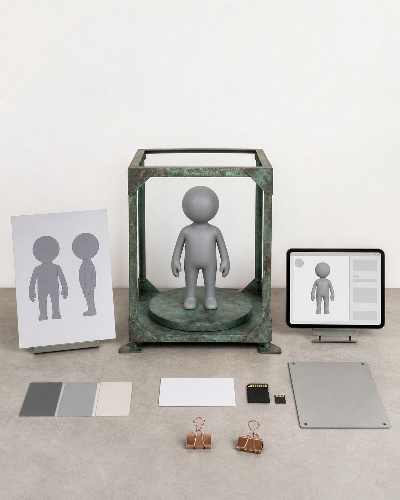

五天结束，你至少带走这 10 项成果
课程成果不应只按成品件数理解。五天结束时，需要知道哪些判断资料、数字文件、验证样件、表达资料与持续执行工具会被保留，它们分别解决什么问题，以及哪些成果会因项目复杂度进入基础、标准或进阶出口。
具体问题
谈到五天课程的成果，最容易只问“最后能拿走几件成品”。这个问题忽略了项目卡、版权状态、三维文件、切片记录、问题清单和网站源码等资产；如果这些内容没有被保留，一件样品也很难在课后继续修正、复制或交给别人协作。
另一种误解是把十项成果当成十件同等成熟的终稿。项目起点、尺寸、结构复杂度、打印排程和修正次数不同，实体样件可能是完整灰模、局部样或小尺寸验证件，涂装也可能是基础涂装或重点局部。真正要解决的问题，是每项成果是否有明确用途、版本关系和下一步，而不是把所有项目压成同一精度。
核心判断
十项成果应被看作一条项目资产链。项目卡、版权状态和结构转译方案确定范围；主视觉与人工修正模型保存形象和结构；GLB 服务网页展示，STL 服务切片与制造；灰模、局部样和问题记录负责实体验证；色板、包装方向、拍摄素材、独立站与推广计划把结果组织成可继续表达和迭代的系统。
判断一项成果是否成立，可以复核四件事：文件或实物确实存在；用途写得清楚；名称、版本和同一项目的其他资产对应；下一阶段可以直接读取并继续工作。只有展示截图而没有源文件，只有样件而没有尺寸与问题记录，或网页、模型和说明卡各用不同版本，都不能算完整交付。
步骤或标准
可按下面十项逐一验收。每一项都要标记文件位置、当前版本、完成等级和下一步责任，不用“最终版”替代具体编号。
- 1. 项目卡、版权状态与结构转译方案：核对用途、尺寸、公开边界及主方案、备选方案、降级方案。
- 2. 主视觉输入与方向组：确认当前采用图、核心辨识点、主方案、备选方案及仍待补齐的结构信息。
- 3. 人工修正后的三维主模型：检查比例、破面、重叠、悬空、薄片、重心、拆件和修正记录。
- 4. GLB 文件：确认可用于网页旋转、缩放和在线查看，并与当前模型版本一致。
- 5. STL 文件与拆件方案：确认其服务切片、打印和装配，不能用展示文件替代生产检查。
- 6. 灰模、局部样或小尺寸实体样品：附切片记录、失败现象、结构验证结论和修正建议。
- 7. 配色色板与基础或重点局部涂装：记录材料、颜色关系、涂装顺序和保护方式。
- 8. 包装方向、产品说明与编号逻辑：写清名称、版本、尺寸、材质、作者、版权和注意事项，并标明草稿状态。
- 9. 横图、竖图、细节图与过程素材：统一对应当前版本，为网站和社媒留下可追溯素材。
- 10. 可编辑独立站、GLB 展示、平台文案模板与 30 天推广计划：保存源码和资产路径，列明发布节奏、复盘节点与下一轮迭代任务。
常见错误
下列错误会让看似丰富的成果失去可继续使用的价值。
- 只数实体成品，不保存项目卡、版本和问题记录；后果是课后无法判断模型为何这样修改，也难以稳定重打或协作。
- 混用 GLB 与 STL，把两者当成相同导出副本；后果是网页展示负担与打印结构要求相互冲突，文件用途变得不可核验。
- 把灰模、局部样、包装方向稿或网站草稿写成正式商品；后果是完成度边界失真，可能误导展示、合作与报名判断。
- 要求十项成果全部达到商业级终稿；后果是时间被平均分散，核心结构还未验证就进入涂装、包装或发布。
- 图片、模型、说明卡和网页没有统一命名与版本；后果是同一项目出现多套互相矛盾的外形、尺寸和描述。
与五天课程的关系
这十项成果横跨 Day 1 至 Day 5。Day 1 形成项目卡、版权状态、视觉输入和主 / 备 / 降级方案，通过 Gate 1 后进入三维；Day 2 形成人工修正模型、GLB、STL 与拆件方案，通过 Gate 2 后进入切片和打印；Day 3 形成灰模或局部样、切片记录、问题清单与色板，通过 Gate 3 后决定继续涂装、保留灰模或降级。
Day 4 形成基础或重点局部涂装、包装方向、说明卡和拍摄素材，并以 Gate 4 核对信息、版权、图片与成果描述；Day 5 再把前四天资产整理进个人独立站、GLB 在线展示、平台文案模板和 30 天推广计划。完成这一阶段后，下一阶段是课后 30 天迭代：按问题清单修正模型、补充素材、完善页面并评估正式包装、批量复制、展览或销售是否值得继续。
事实 / 案例 / 完成度边界
本文依据已经公开的五天安排、结课成果包和四个 Gate 整理。当天图片中的项目卡、文件介质、灰模、色板、包装方向和网页设备均是课程流程示意，不是学员案例，也不代表已经发生课堂、制作、报名、展览或销售。真实案例只有在来源、授权和完成状态可以核验时才能单独标注；示意图不得替代真实案例。
五天内的完成度取决于项目起点、结构复杂度、尺寸、设备、材料、打印排程和修正次数，成果会进入基础、标准或进阶出口。课程不承诺每个人得到相同数量或精度的实体，不承诺人人完成商业级精修、正式包装印刷、批量生产、正式展览、授权成交或销售；灰模、局部样、方向稿和页面草稿都必须按真实状态命名。
报名入口
如果你已有 IP / 角色资产，可以在报名资料中说明当前作品、版权状态、希望保留的辨识点和想验证的实体方向；不需要先把所有结构、文件和包装都自行补齐。
如果你只有想法、草图或初步设定，也可以如实说明故事、关键词、参考方向、希望做成的物品和现有设备。两类起点进入同一条五天生产链，具体范围在 Day 1 判断。公开报名地址：https://wj.qq.com/s2/27296919/9499/

长期招生｜青岛｜3–5 天短训｜评估后预约跟班｜每班最多 10 人。查看当前学习方案与费用
填写报名资料 →